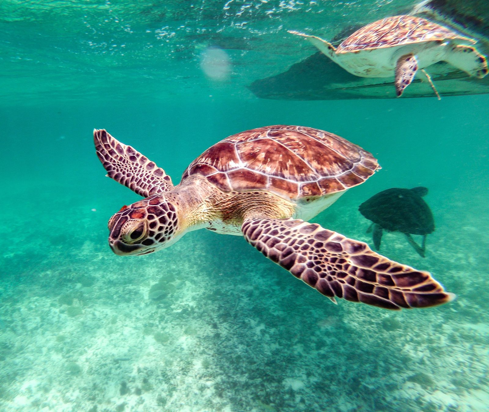
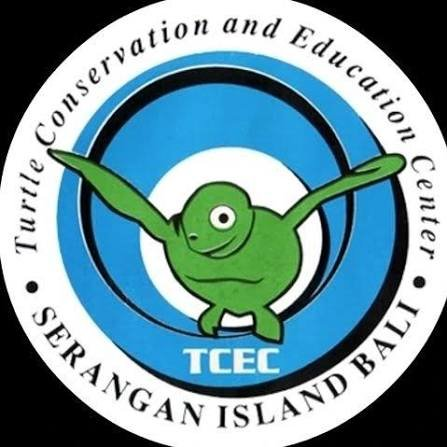

TUJUAN KAMI
Penjaga Zona Pesisir.
FLIPOINT lahir dari pertemuan antara sains kelautan yang ketat dan inovasi digital. Kami berfokus pada pemantauan pesisir dan perlindungan biodiversitas penyu, paus, serta lumba-lumba di perairan Bali. Misi kami adalah mengubah data menjadi aksi nyata bersama masyarakat.
1.248
Laporan Tercatat
3
Spesies Fokus

play_arrow
Tonton Video Konservasi
JEJARING ILMIAH
Mitra Strategis Kami

science
TEAM RESEARCH
Pertanyaan Umum
Seputar cara kerja FLIPOINT dan respons konservasi kami.
Bagaimana cara melaporkan penyu yang terdampar?
expand_moreBagaimana cara mendapatkan poin?
expand_moreBagaimana laporan diverifikasi?
expand_moreBergabunglah dengan komunitas kami
Dapatkan pembaruan konservasi dan edukasi MIL mingguan langsung dari tim FLIPOINT.